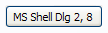

| Version: 2.9.4 |
#include </home/zeitlin/src/wx/github/interface/wx/fontpicker.h>
 Inheritance diagram for wxFontPickerCtrl:
Inheritance diagram for wxFontPickerCtrl:This control allows the user to select a font.
The generic implementation is a button which brings up a wxFontDialog when clicked. Native implementation may differ but this is usually a (small) widget which give access to the font-chooser dialog. It is only available if wxUSE_FONTPICKERCTRL is set to 1 (the default).
This class supports the following styles:
The following event handler macros redirect the events to member function handlers 'func' with prototypes like:
Event macros for events emitted by this class:
|  |  |  |
| wxMSW appearance | wxGTK appearance | wxMac appearance |
Public Member Functions | |
| wxFontPickerCtrl () | |
| wxFontPickerCtrl (wxWindow *parent, wxWindowID id, const wxFont &font=wxNullFont, const wxPoint &pos=wxDefaultPosition, const wxSize &size=wxDefaultSize, long style=wxFNTP_DEFAULT_STYLE, const wxValidator &validator=wxDefaultValidator, const wxString &name=wxFontPickerCtrlNameStr) | |
| Initializes the object and calls Create() with all the parameters. | |
| bool | Create (wxWindow *parent, wxWindowID id, const wxFont &font=wxNullFont, const wxPoint &pos=wxDefaultPosition, const wxSize &size=wxDefaultSize, long style=wxFNTP_DEFAULT_STYLE, const wxValidator &validator=wxDefaultValidator, const wxString &name=wxFontPickerCtrlNameStr) |
| Creates this widget with given parameters. | |
| unsigned int | GetMaxPointSize () const |
| Returns the maximum point size value allowed for the user-chosen font. | |
| wxFont | GetSelectedFont () const |
| Returns the currently selected font. | |
| void | SetMaxPointSize (unsigned int max) |
| Sets the maximum point size value allowed for the user-chosen font. | |
| void | SetSelectedFont (const wxFont &font) |
| Sets the currently selected font. | |
| wxFontPickerCtrl::wxFontPickerCtrl | ( | ) |
| wxFontPickerCtrl::wxFontPickerCtrl | ( | wxWindow * | parent, |
| wxWindowID | id, | ||
| const wxFont & | font = wxNullFont, |
||
| const wxPoint & | pos = wxDefaultPosition, |
||
| const wxSize & | size = wxDefaultSize, |
||
| long | style = wxFNTP_DEFAULT_STYLE, |
||
| const wxValidator & | validator = wxDefaultValidator, |
||
| const wxString & | name = wxFontPickerCtrlNameStr |
||
| ) |
Initializes the object and calls Create() with all the parameters.
| bool wxFontPickerCtrl::Create | ( | wxWindow * | parent, |
| wxWindowID | id, | ||
| const wxFont & | font = wxNullFont, |
||
| const wxPoint & | pos = wxDefaultPosition, |
||
| const wxSize & | size = wxDefaultSize, |
||
| long | style = wxFNTP_DEFAULT_STYLE, |
||
| const wxValidator & | validator = wxDefaultValidator, |
||
| const wxString & | name = wxFontPickerCtrlNameStr |
||
| ) |
Creates this widget with given parameters.
| parent | Parent window, must not be non-NULL. |
| id | The identifier for the control. |
| font | The initial font shown in the control. If wxNullFont is given, the default font is used. |
| pos | Initial position. |
| size | Initial size. |
| style | The window style, see wxFNTP_* flags. |
| validator | Validator which can be used for additional date checks. |
| name | Control name. |
| unsigned int wxFontPickerCtrl::GetMaxPointSize | ( | ) | const |
Returns the maximum point size value allowed for the user-chosen font.
| wxFont wxFontPickerCtrl::GetSelectedFont | ( | ) | const |
Returns the currently selected font.
Note that this function is completely different from wxWindow::GetFont.
| void wxFontPickerCtrl::SetMaxPointSize | ( | unsigned int | max | ) |
Sets the maximum point size value allowed for the user-chosen font.
The default value is 100. Note that big fonts can require a lot of memory and CPU time both for creation and for rendering; thus, specially because the user has the option to specify the fontsize through a text control (see wxFNTP_USE_TEXTCTRL), it's a good idea to put a limit to the maximum font size when huge fonts do not make much sense.
| void wxFontPickerCtrl::SetSelectedFont | ( | const wxFont & | font | ) |
Sets the currently selected font.
Note that this function is completely different from wxWindow::SetFont.